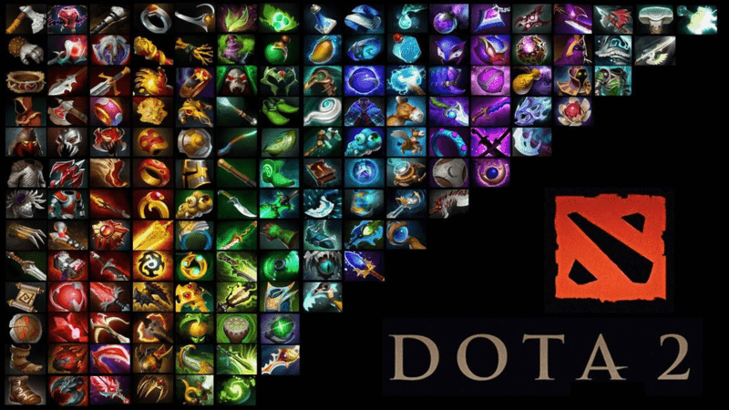

items
-

what does items in dota 2 do?
In Dota 2, items enhance a hero's abilities, stats, and gameplay. They come in various types, including basic items, which are cheap and build into stronger items; core items, essential for mid-to-late game power; and luxury items, providing significant late-game boosts. Items can offer passive effects, active abilities, and stat bonuses, helping players customize their heroes and adapt to the game’s needs. The right item choices at the right time are crucial for success.